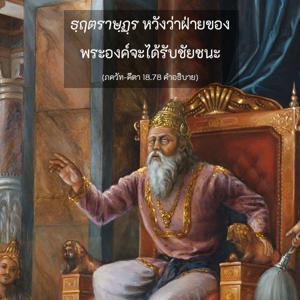
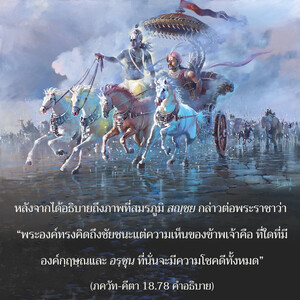
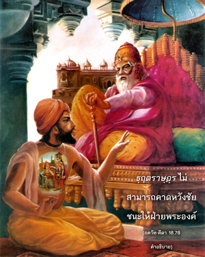
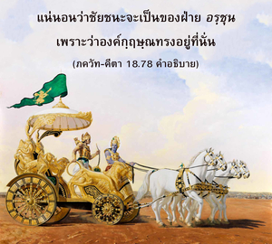
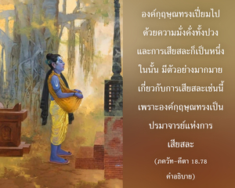

ที่ใดที่มีองค์กฺฤษฺณ ปรมาจารย์แห่งระบบโยคะทั้งหลาย และที่ใดที่มี อรฺชุน นักยิงธนูผู้ยอดเยี่ยม แน่นอนว่าที่นั่นจะมีความมั่งคั่ง ชัยชนะ พลังอำนาจพิเศษ พร้อมทั้งศีลธรรม นั่นคือความเห็นของข้า





ภควัท-คีตา เริ่มด้วยคำถามของ ธฺฤตราษฺฏฺร ผู้หวังให้โอรสของพระองค์ได้รับชัยชนะ ซึ่งมีนักรบผู้ยิ่งใหญ่ เช่น ภีษฺม, โทฺรณ และ กรฺณ ช่วย ธฺฤตราษฺฏฺร หวังว่าฝ่ายของพระองค์จะได้รับชัยชนะ หลังจากได้อธิบายถึงภาพที่สมรภูมิ สญฺชย กล่าวต่อพระราชาว่า “พระองค์ทรงคิดถึงชัยชนะแต่ความเห็นของข้าพเจ้าคือ ที่ใดที่มีองค์กฺฤษฺณและ อรฺชุน ที่นั่นจะมีความโชคดีทั้งหมด” ธฺฤตราษฺฏฺร ไม่สามารถคาดหวังชัยชนะให้ฝ่ายพระองค์ แน่นอนว่าชัยชนะจะเป็นของฝ่าย อรฺชุน เพราะว่าองค์กฺฤษฺณทรงอยู่ที่นั่น การที่องค์กฺฤษฺณทรงยอมรับตำแหน่งสารถีให้ อรฺชุน เป็นการแสดงถึงความมั่งคั่งอีกประการหนึ่ง องค์กฺฤษฺณทรงเปี่ยมไปด้วยความมั่งคั่งทั้งปวง และการเสียสละก็เป็นหนึ่งในนั้น มีตัวอย่างมากมายเกี่ยวกับการเสียสละเช่นนี้ เพราะองค์กฺฤษฺณทรงเป็นปรมาจารย์แห่งการเสียสละ
อันที่จริงเป็นการต่อสู้ระหว่าง ทุโรฺยธน และ ยุธิษฺฐิร อรฺชุน ทรงต่อสู้เพื่อพระเชษฐา ยุธิษฺฐิร เนื่องจากองค์กฺฤษฺณและ อรฺชุน ทรงอยู่ฝ่าย ยุธิษฺฐิร ชัยชนะของ ยุธิษฺฐิร จึงเป็นที่แน่นอน การทำศึกสงครามก็เพื่อตัดสินว่าใครจะเป็นผู้ปกครองโลก สญฺชย ทำนายว่าอำนาจจะย้ายไปอยู่ที่ ยุธิษฺฐิร และยังทำนายตรงนี้ว่าหลังจากได้รับชัยชนะในสงครามนี้แล้ว ยุธิษฺฐิร จะเจริญรุ่งเรื่องมากยิ่งขึ้นเพราะไม่เพียงเป็นผู้มีคุณธรรมและมีบุญเท่านั้น แต่ ยุธิษฺฐิร ยังเป็นผู้มีศีลธรรมอย่างเคร่งครัด โดยไม่เคยตรัสคำโกหกเลยแม้แต่ครั้งเดียวในชีวิต
มีบุคคลผู้ด้อยปัญญามากมายที่คิดว่า ภควัท-คีตา เป็นการสนทนาประเด็นต่างๆ ระหว่างเพื่อนสองคนที่สมรภูมิ และหนังสือเล่มนี้ไม่สามารถเป็นพระคัมภีร์ได้ บางคนอาจต่อต้านว่าองค์กฺฤษฺณทรงยุยงให้ อรฺชุน ต่อสู้ซึ่งผิดศีลธรรม แต่ความจริงของสถานการณ์ได้กล่าวไว้อย่างชัดเจน ภควัท-คีตา เป็นคำสั่งสอนศีลธรรมสูงสุด คำสั่งสอนศีลธรรมสูงสุดได้กล่าวไว้ในบทที่เก้า โศลกสามสิบสี่ว่า มนฺ-มนา ภว มทฺ-ภกฺตห์ เราต้องมาเป็นสาวกขององค์กฺฤษฺณ และแก่นสารสาระของศาสนาทั้งหมดคือ การศิโรราบต่อองค์กฺฤษฺณ (สรฺว-ธรฺมานฺ ปริตฺยชฺย มามฺ เอกํ ศรณํ วฺรช) คำสั่งสอนต่างๆ ของ ภควัท-คีตา รวมกันเป็นวิธีการสูงสุดแห่งศาสนาและศีลธรรม วิธีการอื่นๆ ทั้งหมดอาจทำให้บริสุทธิ์และอาจนำมาสู่วิธีการนี้ แต่คำสั่งสุดท้ายของ ภควัท-คีตา เป็นคำสุดท้ายในศีลธรรมและศาสนาทั้งหมด คือ การศิโรราบต่อองค์กฺฤษฺณ นี่คือคำสรุปของบทที่สิบแปด
จาก ภควัท-คีตา เราสามารถเข้าใจว่าการรู้แจ้งตนเองด้วยการคาดคะเนทางปรัชญา และด้วยการทำสมาธิเป็นวิธีการหนึ่ง แต่การศิโรราบต่อองค์กฺฤษฺณโดยบริบูรณ์เป็นความสมบูรณ์สูงสุด นี่คือแก่นสารสาระแห่งคำสอนต่างๆ ของ ภควัท-คีตา วิถีทางแห่งหลักปฏิบัติโดยประมาณตามระดับชีวิตทางสังคม และตามวิชาต่างๆ ทางศาสนาอาจเป็นวิธีลับแห่งความรู้ แต่แม้ว่าพิธีกรรมทางศาสนาจะเป็นความลับ การทำสมาธิและการพัฒนาความรู้เป็นความลับยิ่งขึ้นไปอีก และการศิโรราบต่อองค์กฺฤษฺณในการอุทิศตนเสียสละรับใช้ในกฺฤษฺณจิตสำนึกอย่างสมบูรณ์เป็นคำสั่งสอนที่ลับสุดยอด นั่นคือแก่นสารสาระของบทที่สิบแปด
คุณลักษณะหนึ่งของ ภควัท-คีตา คือสัจธรรมที่แท้จริงคือ บุคลิกภาพสูงสุดแห่งพระเจ้า องค์กฺฤษฺณ สัจธรรมที่สมบูรณ์รู้แจ้งได้ในสามลักษณะคือ พฺรหฺมนฺ อันไร้รูปลักษณ์ ปรมาตฺมา ภายในหัวใจของทุกคน และในที่สุดองค์กฺฤษฺณ บุคลิกภาพสูงสุดแห่งพระเจ้า ความรู้อันสมบูรณ์แห่งสัจธรรมหมายถึง ความรู้อันบริบูรณ์แห่งองค์กฺฤษฺณ หากเราเข้าใจองค์กฺฤษฺณความรู้ในสาขาวิชาต่างๆ ทั้งหมดก็เป็นส่วนหนึ่งแห่งการเข้าใจนั้น องค์กฺฤษฺณทรงเป็นทิพย์เนื่องจากทรงสถิตในพลังงานเบื้องสูงนิรันดรของพระองค์เสมอ สิ่งมีชีวิตปรากฏออกมาจากพลังงานของพระองค์ และแบ่งออกเป็นสองประเภทคือ พันธนิรันดร และอิสรนิรันดร สิ่งมีชีวิตเหล่านี้มีจำนวนนับไม่ถ้วน พิจารณาว่าเป็นละอองอณูขององค์กฺฤษฺณ พลังงานวัตถุปรากฏเป็นยี่สิบสี่ธาตุ การสร้างมีผลกระทบมาจากกาลเวลาอมตะ พลังงานเบื้องต่ำเป็นผู้สร้างและทำลาย การปรากฏแห่งโลกจักรวาลนี้ปรากฏให้เห็นและไม่เห็นซ้ำแล้วซ้ำอีก
ใน ภควัท-คีตา ได้สนทนาหัวข้อหลักห้าประเด็น คือ องค์ภควานฺบุคลิกภาพสูงสุดแห่งพระเจ้า ธรรมชาติวัตถุ สิ่งมีชีวิต กาลเวลาอมตะ และกิจกรรมต่างๆ ทั้งหลายทั้งหมดขึ้นอยู่กับองค์กฺฤษฺณบุคลิกภาพสูงสุดแห่งพระเจ้า แนวคิดทั้งหมดแห่งสัจธรรม เช่น พฺรหฺมนฺ อันไร้รูปลักษณ์ ปรมาตฺมา ภายในหัวใจของทุกคน และแนวคิดทิพย์อื่นๆ มีอยู่ภายในประเด็นแห่งการเข้าใจองค์ภควานฺ ถึงแม้ว่าโดยผิวเผินแล้วองค์ภควานฺ สิ่งมีชีวิต ธรรมชาติวัตถุ และกาลเวลาดูเหมือนจะแตกต่างกัน ไม่มีสิ่งใดแตกต่างไปจากองค์ภควานฺ แต่พระองค์ทรงแตกต่างจากทุกสิ่งทุกอย่างเสมอ ปรัชญาขององค์ ไจตนฺย คือ “เป็นหนึ่งเดียวกันและแตกต่างกันอย่างไม่สามารถมองเห็นได้” ระบบปรัชญานี้รวมกันเป็นความรู้อันสมบูรณ์แห่งสัจธรรม
สิ่งมีชีวิตในสถานภาพเดิมแท้เป็นดวงวิญญาณบริสุทธิ์เหมือนกับละอองอณูของดวงวิญญาณสูงสุด ดังนั้น องค์กฺฤษฺณทรงอาจเปรียบเทียบได้กับดวงอาทิตย์ และสิ่งมีชีวิตเปรียบเทียบได้กับแสงอาทิตย์ เนื่องจากสิ่งมีชีวิตเป็นพลังงานพรมแดนขององค์กฺฤษฺณจึงมีแนวโน้มที่จะสัมผัสกับไม่พลังงานวัตถุก็พลังงานทิพย์ อีกนัยหนึ่ง สิ่งมีชีวิตสถิตระหว่างสองพลังงานขององค์ภควานฺ และเนื่องจากอยู่ในพลังงานที่สูงกว่าของพระองค์จึงมีความเป็นอิสระอยู่เล็กน้อย เมื่อใช้อิสรภาพเล็กน้อยที่มีอยู่อย่างถูกต้องเขาจะมาอยู่ภายใต้คำสั่งโดยตรงขององค์กฺฤษฺณ ดังนั้น จึงบรรลุถึงสภาวะปกติธรรมดาในพลังอำนาจที่ให้ความสุข